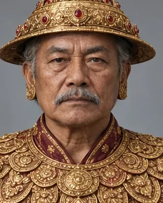

king of Burma 1782–1819 · King of Burma

Received Badan Chandra Borphukan in 1816 and sent the first Burmese expedition into Assam in 1817.
Record confidence: medium.
Open interactive profile
1815–1816